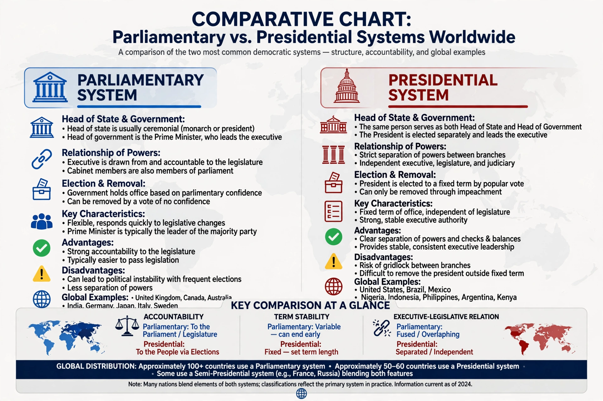

Comparative politics is a subfield of political science that studies political systems, institutions, and behaviour through comparison across countries. Unlike international relations, which focuses on relations between states, comparative politics examines politics within states, using comparison to identify patterns, test theories, and explain variation in outcomes such as democratisation, economic development, and political stability.
The comparative study of constitutions dates to Aristotle's classification of regimes. Modern comparative politics took shape after the Second World War, when scholars such as Gabriel Almond and Sidney Verba moved beyond formal legal institutions toward political culture, parties, and interest groups, and expanded the field beyond Europe and North America. Later generations developed structural, rational-choice, and historical-institutionalist approaches; classic works include Barrington Moore's Social Origins of Dictatorship and Democracy (1966) and Theda Skocpol's States and Social Revolutions (1979).
Comparativists use small-N case studies, most-similar and most-different systems designs, and large-N statistical analysis of cross-national data. Major topics include electoral systems and party systems (Duverger's law), presidentialism versus parliamentarism, federalism, democratisation and democratic backsliding, revolutions, welfare states, and political violence. Giovanni Sartori's work on party systems and Arend Lijphart's contrast between majoritarian and consensus democracies are standard reference points.
Comparative politics is usually distinguished from political theory, which is primarily normative and historical, though the fields inform one another: comparative findings bear on theoretical questions about democracy, representation, and the state.
See also: Political science · Arend Lijphart · Electoral system